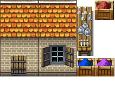

| Image | Name | Description |
|---|
 | shack | A shack is used to sleep and to store items. |
 | house | A house is used to sleep and to store items. |
 | voting box | A voting box is used to become a candidate and vote in elections. |
 | well | A well provides water to drink or to collect. |
 | Training dummy | A training dummy is used to train combat skills. |
 | shrine to Aphrodite | A shrine is used to worship Aphrodite. |
 | shrine to Apollo | A shrine is used to worship Apollo. |
 | shrine to Ares | A shrine is used to worship Ares. |
 | shrine to Artemis | A shrine is used to worship Artemis. |
 | shrine to Athena | A shrine is used to worship Athena. |
 | shrine to Demeter | A shrine is used to worship Demeter. |
 | shrine to Dionysus | A shrine is used to worship Dionysus. |
 | shrine to Hades | A shrine is used to worship Hades. |
 | shrine to Hephaestus | A shrine is used to worship Hephaestus. |
 | shrine to Hera | A shrine is used to worship Hera. |
 | shrine to Hermes | A shrine is used to worship Hermes. |
 | shrine to Poseidon | A shrine is used to worship Poseidon. |
 | shrine to Zeus | A shrine is used to worship Zeus. |
 | sacrificial Altar | A sacrificial altar is used to sacrifice people. |
 | chest | A chest stores items. |
 | library | A library is used to research spells. |
 | papermill | A papermill is used to create paper. |
 | smithy | A smithy is used to create weapons and armor. |
 | workbench | A workbench is used to create tools. |
 | weavery | A weavery is used to create light armor. |
 | brewery | A brewery is used to create alcohol. |
|  | apothecary | An apothecary is used to create potions. |